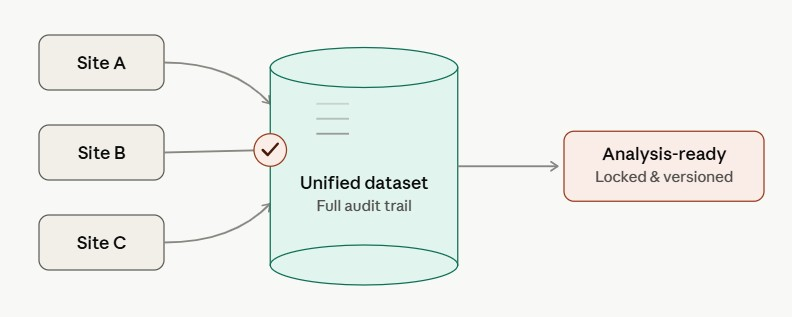
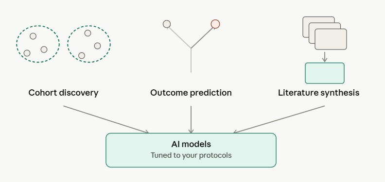
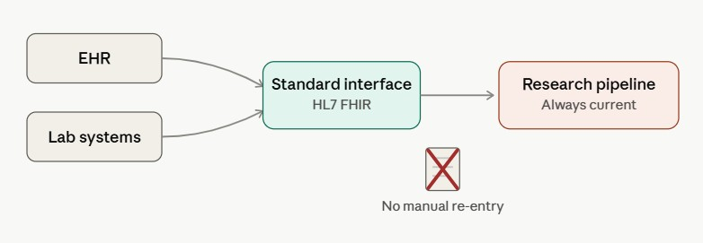
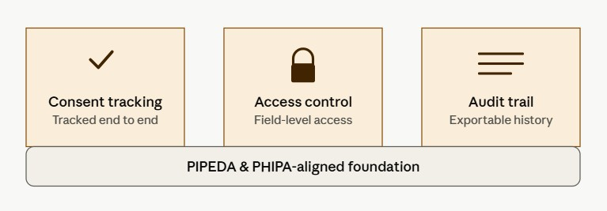

Health research software & AI
VitalSoftAI designs and builds the platforms that clinical and health research teams run on — from trial data capture to AI-assisted analysis — so findings move from raw signal to publishable insight faster, and with less risk.
What we build
Capture, clean, and unify trial and cohort data from multiple sites into one auditable source of truth.

Models built with your research team — cohort discovery, outcome prediction, and literature synthesis tuned to your protocols.

Connect to hospital and lab systems through standard health data interfaces, so research pipelines stay current.

Consent tracking, access controls, and audit trails built to Canadian and international health-privacy standards.

VitalSoftAI cut the time from data lock to first analysis on our multi-site cohort study from months to weeks — without asking our researchers to change how they work.
Tell us about your study, systems, or team, and we'll map out where VitalSoftAI fits — usually within one conversation.
Book a walkthrough →